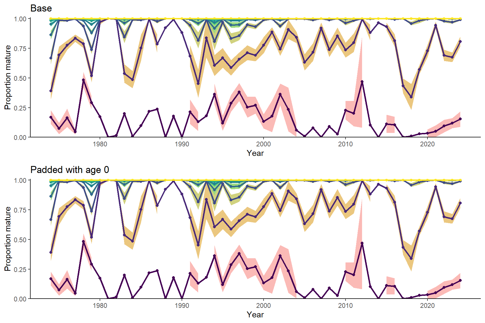
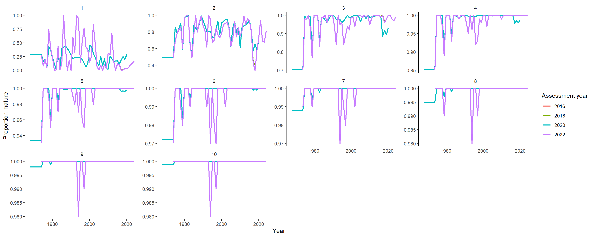
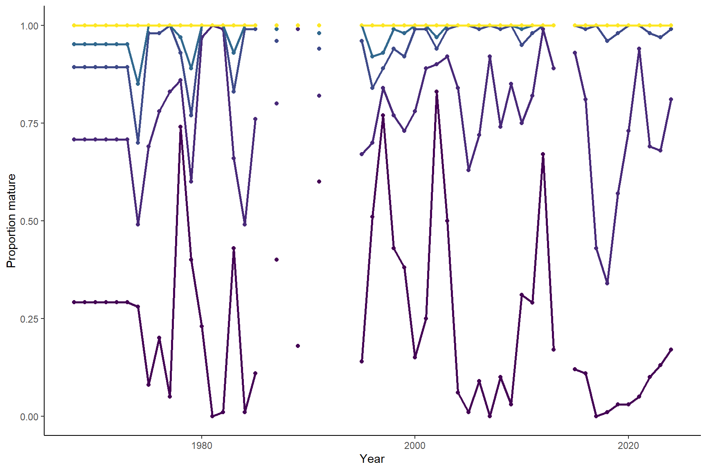
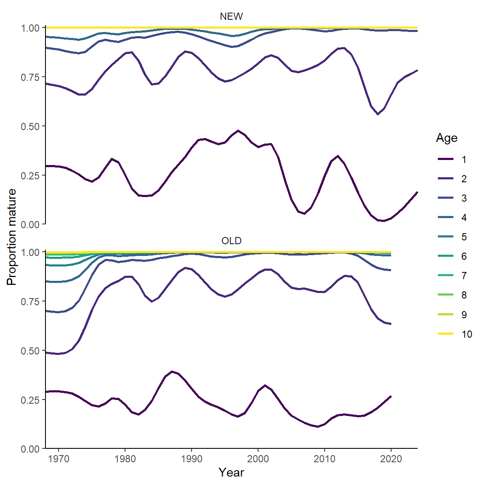
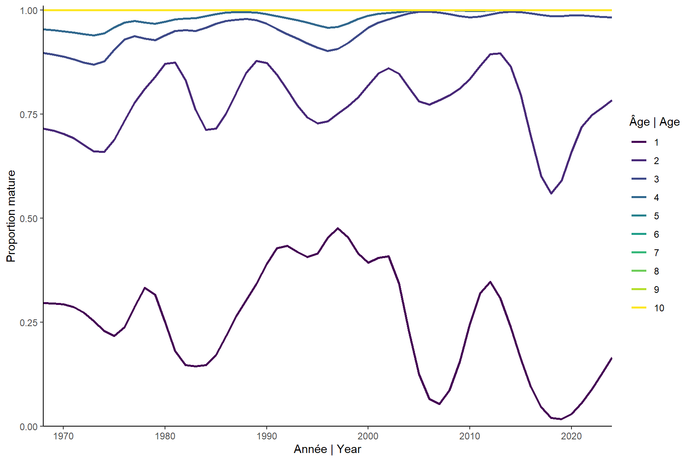

Maturity-at-age
2024-12-17
1 SET-UP
source('../../0.0_settings.R')2 Input data
2.1 Read
new <- T
if(new){
bio <- get.bio(species='maquereau',user=imlp.user,password=imlp.pass)
f <- paste0('../../Rdata/bio_',Sys.Date(),'.Rdata')
save(bio,file=f)
}else{
df <- file.info(list.files("../../Rdata/", full.names = T,pattern="bio_"))
f <- rownames(df)[which.max(df$mtime)]
load(f)
}
print(f)
## [1] "../../Rdata/bio_2024-12-17.Rdata"
maa.gear <- read.table(paste0(dir.dat,'maa_group_gear.txt'),header=T)
maa.region <- read.table(paste0(dir.dat,'maa_group_region.txt'),header=T)2.2 Clean
# subset
bio.mat <- bio[,c('year','nafo','gear','sex','month','length.frozen','agef','matur')]
names(bio.mat)[c(6:7)] <- c('length','age')
nrow(bio.mat)
## [1] 146719
# what months?
bio.mat <- bio.mat[bio.mat$month %in% c(6:7),] # was done before
# bio.mat <- bio.mat[bio.mat$month %in% c(5:11),] # less smooth results, depsite larger amount of data and small effect of month on maa
# remove NAs
bio.mat <- bio.mat[!is.na(bio.mat$matur) & !is.na(bio.mat$age) & !is.na(bio.mat$year),]
nrow(bio.mat)
## [1] 46991
# remove fish with ages that cannot be trusted (wrong length: see 3.0_caa))
bio.mat <- bio.mat[bio.mat$age<18,]
bio.mat <- ddply(bio.mat,c('age'),transform,outlier=outlier(length,coef=3))
bio.mat[(bio.mat$age==0 & bio.mat$length>300),'outlier'] <- TRUE
bio.mat[is.na(bio.mat$outlier),'outlier'] <- FALSE
bio.mat <- bio.mat[bio.mat$outlier==FALSE,]
bio.mat$outlier <- NULL
nrow(bio.mat)
## [1] 46956
### transform
# group gears and regions for sens test
bio.mat$region <- maa.region[match(bio.mat$nafo,maa.region$nafo),'region']
table(bio.mat$region,useNA = 'always')
##
## eNL nGSL sGSL sNL SS wNL <NA>
## 794 794 30893 150 13659 666 0
bio.mat$gear.group <- maa.gear[match(bio.mat$gear,maa.gear$gear.cat),'gear.group']
table(bio.mat$gear.group,useNA = 'always')
##
## Gillnets Lines Misc Seines_Nets_Traps_Weirs <NA>
## 26170 7560 542 12684 0
# age: 10 is plus group
bio.mat[bio.mat$age>10,'age'] <- 10
# mature vs immature
bio.mat$mat <- ifelse(bio.mat$matur<3,0,1) # based on maturity stage, not sex (F, I, M)
# correct maturity stage of age 0 fish. If caught in months 8-12 can impossibly be mature because only some months old.
bio.mat[bio.mat$mat==1 & bio.mat$age==0 & bio.mat$month>7,'mat'] <- 0
# proportion mature at age
prop.mat <- ddply(bio.mat,c('year','age'),summarise,
prop.immat=length(mat[mat==0])/length(mat),
prop.mat=length(mat[mat==1])/length(mat),
n=length(mat))2.3 Tables
2.3.1 numbers
kable(t(table(bio.mat$mat,bio.mat$year)))| 0 | 1 | |
|---|---|---|
| 1973 | 1338 | 92 |
| 1974 | 103 | 592 |
| 1975 | 110 | 813 |
| 1976 | 104 | 1436 |
| 1977 | 455 | 2160 |
| 1978 | 76 | 1419 |
| 1979 | 175 | 1749 |
| 1980 | 9 | 1465 |
| 1981 | 12 | 1180 |
| 1982 | 67 | 883 |
| 1983 | 51 | 431 |
| 1984 | 96 | 987 |
| 1985 | 38 | 1030 |
| 1986 | 0 | 581 |
| 1987 | 28 | 681 |
| 1988 | 1 | 562 |
| 1989 | 42 | 786 |
| 1990 | 2 | 658 |
| 1991 | 21 | 590 |
| 1992 | 25 | 457 |
| 1993 | 1 | 711 |
| 1994 | 11 | 327 |
| 1995 | 78 | 805 |
| 1996 | 63 | 655 |
| 1997 | 47 | 640 |
| 1998 | 49 | 976 |
| 1999 | 104 | 1004 |
| 2000 | 103 | 825 |
| 2001 | 34 | 753 |
| 2002 | 37 | 741 |
| 2003 | 6 | 712 |
| 2004 | 92 | 963 |
| 2005 | 138 | 815 |
| 2006 | 70 | 713 |
| 2007 | 20 | 768 |
| 2008 | 102 | 880 |
| 2009 | 45 | 567 |
| 2010 | 70 | 498 |
| 2011 | 28 | 567 |
| 2012 | 2 | 384 |
| 2013 | 11 | 416 |
| 2014 | 2 | 424 |
| 2015 | 68 | 764 |
| 2016 | 84 | 699 |
| 2017 | 144 | 741 |
| 2018 | 109 | 976 |
| 2019 | 298 | 997 |
| 2020 | 147 | 669 |
| 2021 | 86 | 823 |
| 2022 | 157 | 462 |
| 2023 | 234 | 961 |
| 2024 | 119 | 856 |
2.4 Plots
2.4.1 age vs maturity curve
ggplot(prop.mat,aes(x=age,y=prop.mat))+
geom_line(size=1)+
geom_point()+
geom_text(aes(label=n),size=3,hjust=0,vjust=0)+
facet_wrap(~year)+
scale_color_viridis_c()
2.4.2 age vs maturity tile
ggplot(prop.mat,aes(x=year,y=age,fill=prop.mat))+
geom_tile()+
geom_text(aes(label=round(prop.mat,2)),size=2)+
scale_fill_viridis_c()+
scale_x_continuous(expand=c(0,0))+
scale_y_continuous(expand=c(0,0))
2.4.3 age vs maturity n
ggplot(prop.mat,aes(x=year,y=age,fill=n))+
geom_tile()+
geom_text(aes(label=n),size=2)+
scale_fill_viridis_c(direction = -1)+
scale_x_continuous(expand=c(0,0))+
scale_y_continuous(expand=c(0,0))
3 Calculations
# exclude 1973
bio.mat <- bio.mat[bio.mat$year!=1973,]
prop.mat <- prop.mat[prop.mat$year!=1973,]
# run models
mods <- lapply(unique(bio.mat$year), function(x) glm(mat~age,data=bio.mat[bio.mat$year==x,],family=binomial(logit))) # warning not a problem
# predictions
df <- data.frame(age=seq(0,10,0.1))
preds <- lapply(mods, function(x) cbind(df,predict(x,df,type="response",se.fit=TRUE))) # predictions
preds <- lapply(preds, function(x) cbind(x, pup= x$fit+1.96*x$se.fit)) # add upper bound
preds <- lapply(preds, function(x) cbind(x, plow= x$fit-1.96*x$se.fit)) # add lower bound
names(preds) <- unique(bio.mat$year)
preds <- bind_rows(preds,.id='year')
maa <- preds[preds$age %in% 1:10,]
rownames(maa) <- 1:nrow(maa)
maa$fit <- round(maa$fit,2)
# test:
# mod <- glm(mat~age+as.factor(year)+as.factor(gear.group)+as.factor(region)+month,data=bio.mat,family=binomial) # though there are interactions
# df2 <- data.frame(expand.grid(age=seq(0,10,0.1),year=as.factor(unique(bio.mat$year))),month=6,region='sGSL',gear.group='Lines')
# preds2 <- cbind(df2,predict(mod,df2,type="response",se.fit=TRUE)) # predictions
# preds2$pup <- preds2$fit+1.96*preds2$se.fit # add upper bound
# preds2$plow <- preds2$fit-1.96*preds2$se.fit # add lower bound
3.1 Plots
3.1.1 fit
ggplot(preds)+
geom_rug(data=bio.mat[bio.mat$mat==0,],aes(x=age,y=mat),sides='b', position = "jitter",col='grey') +
geom_rug(data=bio.mat[bio.mat$mat==1,],aes(x=age,y=mat),sides='t', position = "jitter",col='grey') +
geom_ribbon(aes(ymin=plow,ymax=pup,x=age),fill='red',alpha=0.5)+
geom_line(aes(x=age,y=fit),col='red',size=1)+
geom_point(data=prop.mat,aes(x=age,y=prop.mat))+
scale_y_continuous(limits=c(0,1),expand=c(0,0))+
labs(x='Age',y='Proportion mature')+
facet_wrap(~year)
3.1.2 fit 2 last years
ggplot(preds %>% filter(year %in% (my.year-1) : my.year))+
geom_rug(data=bio.mat[bio.mat$mat==0 & bio.mat$year %in% (my.year-1) : my.year,],aes(x=age,y=mat),sides='b', position = "jitter",col='grey') +
geom_rug(data=bio.mat[bio.mat$mat==1 &bio.mat$year %in% (my.year-1) : my.year,],aes(x=age,y=mat),sides='t', position = "jitter",col='grey') +
geom_ribbon(aes(ymin=plow,ymax=pup,x=age),fill='red',alpha=0.5)+
geom_line(aes(x=age,y=fit),col='red',size=1)+
geom_point(data=prop.mat %>% filter(year %in% (my.year-1) : my.year),aes(x=age,y=prop.mat))+
scale_y_continuous(limits=c(0,1),expand=c(0,0))+
labs(x='Âge | Age',y='Proportion mature')+
scale_x_continuous(breaks=1:10)+
facet_wrap(~year)
3.1.3 maa
m1<- ggplot(maa,aes(x=as.numeric(year),y=fit))+
geom_point(aes(col=as.factor(age)))+
geom_line(aes(col=as.factor(age)),size=1)+
labs(x='Year',y='Proportion mature',col='Age')+
scale_color_viridis_d()+
theme(legend.position = 'none')
m1+labs(x='Année | Year',y='Proportion mature',col='Âge | Age')
ggsave(filename = paste0('../../img/',my.year,'/mat',my.year,'_glmBI.png'),units = 'cm',height = 8,width = 14)
3.1.4 maa ci
ggplot(maa,aes(x=as.numeric(year),y=fit))+
geom_ribbon(aes(ymin=pmax(0,plow),ymax=pmin(1,pup),fill=as.factor(age)),alpha=0.5)+
geom_point(aes(col=as.factor(age)))+
geom_line(aes(col=as.factor(age)),size=1)+
labs(x='Year',y='Proportion mature',col='Age')+
scale_color_viridis_d()+
theme(legend.position = 'none')
4 Sensitivity: age 0
What if there were actually had observations of age 0 (not selected by fishery) that are immature? Conclusion: no significant difference.
# add age 0
n <- 100 # number of new immature fish each year
new <- data.frame(year=unique(bio.mat$year),age=0,mat=0) # all new age 0 for all years
bio.matsupp <- rbind(bio.mat[,which(names(bio.mat) %in% names(new))],new[rep(seq_len(nrow(new)), n), ])
# run models
modssupp <- lapply(unique(bio.matsupp$year), function(x) glm(mat~age,data=bio.matsupp[bio.matsupp$year==x,],family=binomial))
# predictions
predssupp <- lapply(modssupp, function(x) cbind(df,predict(x,df,type="response",se.fit=TRUE))) # predictions
predssupp <- lapply(predssupp, function(x) cbind(x, pup= x$fit+1.96*x$se.fit)) # add upper bound
predssupp <- lapply(predssupp, function(x) cbind(x, plow= x$fit-1.96*x$se.fit)) # add lower bound
names(predssupp) <- unique(bio.matsupp$year)
predssupp <- bind_rows(predssupp,.id='year')
maas <- predssupp[predssupp$age %in% 1:10,]
rownames(maas) <- 1:nrow(maas)
p1 <- ggplot(maas,aes(x=as.numeric(year),y=fit))+
geom_ribbon(aes(ymin=plow,ymax=pup,fill=as.factor(age)),alpha=0.5)+
geom_point(aes(col=as.factor(age)))+
geom_line(aes(col=as.factor(age)),size=1)+
labs(x='Year',y='Proportion mature',col='Age',title='Base')+
scale_color_viridis_d()+
theme(legend.position = 'none')+
scale_y_continuous(limits = c(0,1.01),expand = c(0,0))
p2 <- ggplot(maas,aes(x=as.numeric(year),y=fit))+
geom_ribbon(aes(ymin=plow,ymax=pup,fill=as.factor(age)),alpha=0.5)+
geom_point(aes(col=as.factor(age)))+
geom_line(aes(col=as.factor(age)),size=1)+
labs(x='Year',y='Proportion mature',col='Age',title='Padded with age 0')+
scale_color_viridis_d()+
theme(legend.position = 'none')+
scale_y_continuous(limits = c(0,1.01),expand = c(0,0))
grid.arrange(p1,p2)
5 Comparison with before
5.1 all years
repo <- "https://github.com/iml-mackerel/0.0_model/blob/master/"
ys <- c(2016,2018,2020)
maa.hist <- lapply(ys, function(x) read.ices(url(paste0(repo,'data/',x,'/mo.dat',"?raw=true"))))
names(maa.hist) <- ys
maam <- lapply(names(maa.hist), function(x) reshape2::melt(as.matrix(maa.hist[[x]]),varnames=c('year','age'),value.name=x))
maa.comp <- Reduce(function(x, y) merge(x, y, all=TRUE), maam)
maa.new <- maa[,c('year','age','fit')]
names(maa.new)[3] <- '2022'
maa.comp <- merge(maa.comp,maa.new,all=TRUE)
maa.comp <- melt(maa.comp,id=c('year','age'))
ggplot(maa.comp,aes(x=as.numeric(year),y=value,col=variable))+
geom_line(size=1)+
facet_wrap(~age,scale='free_y')+
labs(x='Year', y='Proportion mature',col='Assessment year')
6 Fill and smooth simple
maas <- maa[,c('year','age','fit')]
maas$year <- as.numeric(maas$year)
# set to one for older ages (once 1 reached cannot decrease anymore)
maas[maas$age>4,'fit'] <- 1
# add early years
av <- ddply(maas[maas$year %in% 1974:1979,],c('age'),summarise,fit=mean(fit))
toadd <- cbind(year=rep(1968:(min(maas$year)-1),each=length(unique(maas$age))),
av[rep(seq(nrow(av)),6),])
maas <- rbind(toadd,maas)
# remove years with insufficeint data
thres <- 30
toremove <- ddply(prop.mat[prop.mat$age %in% 1:2,],c('year'),summarise,toremove=ifelse(sum(n)<30,T,F))
maas[maas$year %in% toremove[toremove$toremove,'year'],'fit'] <- NA
ggplot(maas,aes(x=as.numeric(year),y=fit))+
geom_point(aes(col=as.factor(age)))+
geom_line(aes(col=as.factor(age)),size=1)+
labs(x='Year',y='Proportion mature',col='Age')+
scale_color_viridis_d()+
theme(legend.position = 'none')
6.1 compare with 2020 smoothed
y <- 2020
load(paste0('../../../00.0_model/Rdata/',y,'/fit.Rdata'))
mo <- fit$data$propMat
mo <- melt(mo,varnames = c('year','age'),value.name = 'fit')
mo$source <- 'OLD'
source(paste0('../../../00.0_model/R/smoothmatrix.R'))
sm <- smoothmatrix(dcast(maas,year~age,value.var = 'fit')[,-1],smooth = 0.5)
sm[sm>1] <- 1
sm[sm<0] <- 0
sm$year <- min(maas$year):max(maas$year)
sm <- melt(sm,id='year', variable.name = 'age',value.name = 'fit')
sm$source <- 'NEW'
sms <- rbind(mo,sm)
sms$age <- as.numeric(as.character(sms$age))
ggplot(sms,aes(x=year,y=fit,col=as.factor(age)))+
geom_line(size=1)+
facet_wrap(source~.,ncol=1)+
labs(x='Year',y='Proportion mature',col='Age')+
scale_y_continuous(limits=c(0,1.01),expand=c(0,0))+
scale_x_continuous(expand = c(0,0))+
scale_color_viridis_d()
7 Save results
s <- dcast(sm,year~age,value.var = 'fit')
s[,2:ncol(s)] <- round(s[,2:ncol(s)] ,3)
write.csv(s, file=paste0('../../csv/',my.year,'/maa',my.year,'_base_smooth0.5.csv'),row.names = FALSE)
p <- ggplot(sms[sms$source=='NEW',],aes(x=year,y=fit,col=as.factor(age)))+
geom_line(size=1)+
labs(x='Year',y='Proportion mature',col='Age')+
scale_y_continuous(limits=c(0,1.01),expand=c(0,0))+
scale_x_continuous(expand = c(0,0))+
scale_color_viridis_d()
ggsave(filename = paste0('../../img/',my.year,'/maa',my.year,'_base_smooth0.5.png'),plot = p,units = 'cm',height = 8,width = 14)
p+ labs(x='Année | Year',y='Proportion mature',col='Âge | Age')
ggsave(filename = paste0('../../img/',my.year,'/maa',my.year,'_base_smooth0.5BI.png'),units = 'cm',height = 8,width = 14)